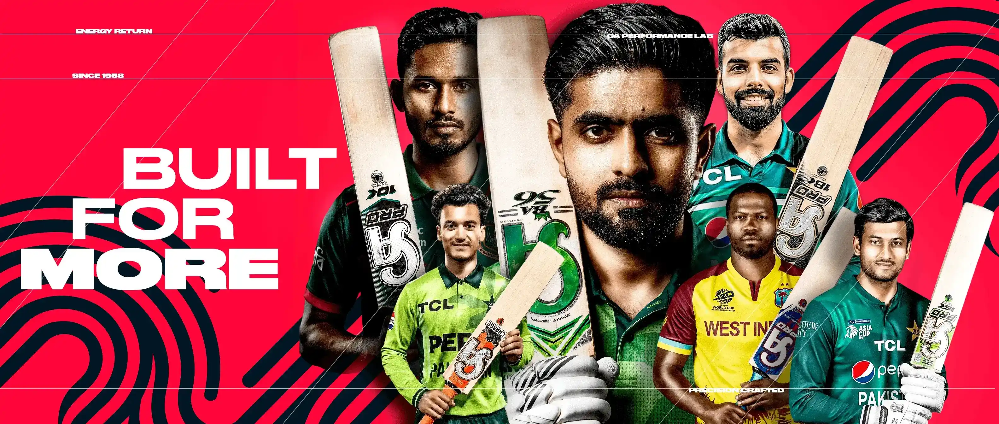
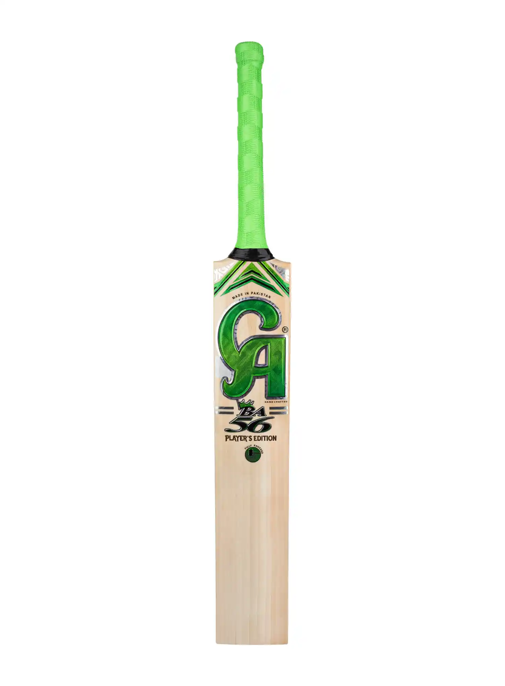

CA Sports is a Pakistani sports equipment manufacturing company headquartered in Sialkot, Punjab, focused on cricket clothing and equipment. Founded in 1958, the company's name refers to the first initials of its founder's name, Charaghdin Abdul Rasheed. The range of cricket products manufactured by CA Sports include on-field equipment (bat, batting gloves, balls, leg pads, protection guards), clothing (shirts, trousers, raincoats, hoodies, polo shirts), athletic shoes, and accessories (bags, backpacks).
Products
Bats:


The BA 56 King’s Edition Cricket Bat, inspired by Babar Azam, is designed for players who want powerful shots, perfect balance, and professional performance. Crafted from high-quality English willow with 9+ straight grains, this bat ensures excellent durability and performance on hard ball matches. The thick sweet spot allows maximum power hitting, while the curved blade design improves stroke play and control. The strong cane handle with soft grip provides comfort and reduces vibration, making it ideal for long innings. With advanced Glass Protek technology, the cricket bat gains extra strength and a longer life. Its stylish 3D sticker design gives a premium and modern look, making it stand out on the ground.
Balls: